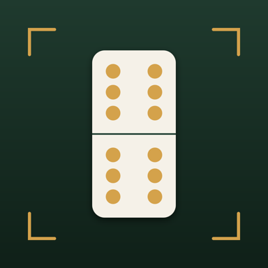

El anotador del dominó dominicano: anota en dos toques o por voz, lleva el cuaderno en pantalla y compite en el ranking con tu peña. Gratis.
Mientras Tantea llega a Google Play, en Android se instala directo con el APK — así de fácil.
Como todavía no estamos en Google Play, la app se instala directo desde el archivo. Es seguro: es el mismo archivo firmado que va para la tienda.
Las mejoras después llegan solas por internet — no hay que descargar el archivo otra vez. Cuando Tantea salga en Google Play, la tienda la actualiza encima sin perder nada.
Cada función salió de peñas reales jugando con la app en la mano.
Toca el frente, pon los tantos y sigue jugando. El cuaderno completo queda a la vista en cada columna, como en el papel.
«30 para nosotros», «anótale 25 a Melissa»… y para corregir: «bórrale 10», «quítale eso». Entiende hasta con bulla.
Salida, pase redondo y capicúa dentro del anotador. Y la regla de casa: con bonos no se domina — solo la capicúa cierra.
Los que no anotan la ven en su teléfono en tiempo real, y pueden sugerir tantos que el anotador acepta con un toque.
Crea tu perfil una vez y compártelo con el código. Tus números te siguen en cualquier mesa donde te anoten.
Mundial, de República Dominicana y de tu provincia. Puntos por victorias, capicúas y zapateras. Abajo te explicamos cómo.
Tú contra quien sea, cara a cara: quién va arriba en cada número y quién domina el duelo.
Cada partida guarda todas sus manos. Se puede revisar, corregir y hasta deshacer una victoria mal cantada.
Tarjeta lista para el estado de WhatsApp con el titular, el marcador y la serie.
RD, PR, Cuba, México, España, Brasil y más — gratis, para que la mesa se vista de tu bandera.
Así se suman los puntos de liga. La fórmula es la misma para todo el mundo y la app la aplica sola — nadie cuadra nada a mano.
| Jugada | Puntos |
|---|---|
|
VictoriaGanar la partida
|
+3 |
|
CapicúaCada una que haga tu frente, ganes o pierdas la partida
|
+1 |
|
ZapateraGanas y el mejor rival no llegó ni a 30 (en Puerto Rico, 25)
|
+1 |
|
LizaGanas y el rival se quedó en CERO — la humillación completa
|
+2 |
Cinco minutos y quedas mejor que el tío que siempre lleva el papelito.
Toca la pastilla de arriba a la izquierda (meta y modo) para configurar: parejas o individual (2, 3 o 4 marcadores) y la meta (200 es lo clásico).
Ponle nombre a los frentes o vincula los perfiles de los jugadores — así la partida cuenta para el ranking. Mantén presionado un frente para editarlo.
Toca la columna del frente que ganó la mano → se abre el anotador: escribe los tantos y, si aplica, marca ahí mismo salida, pase redondo o capicúa. La salida vuelve a estar disponible en cada mano.
Por voz: mantén presionado el micrófono y di «30 para nosotros», «anótale 25 a Melissa», «capicúa para ellos».
En Ajustes crea tu perfil con tu nombre y provincia. Tu código QR vive ahí mismo: muéstralo y que te escaneen desde el botón de escanear (en el marcador o en Ajustes) — quedas en el roster de esa persona para siempre.
Cuando te anoten en cualquier teléfono con tu perfil puesto, esa partida suma a TU ranking.
Si estás jugando pero no eres el que anota, abre Tantea: te sale el aviso «Te están anotando» — tócalo y ves el marcador en tiempo real, con todas las manos.
¿El anotador está lento? Toca «Sugerir tantos», pon el frente y la cantidad, y al anotador le llega para aceptarla con un toque. La autoridad sigue siendo del que anota — como en la mesa.